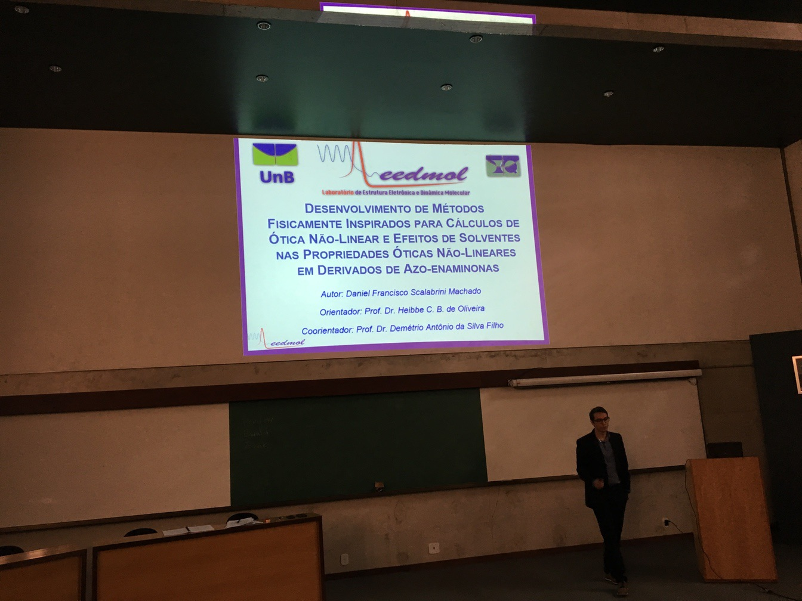
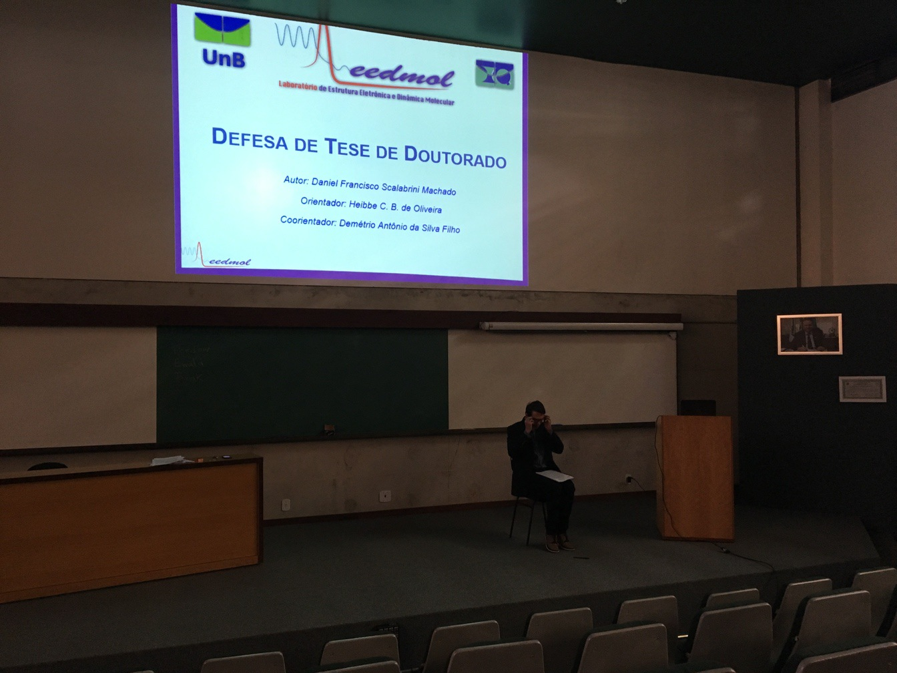
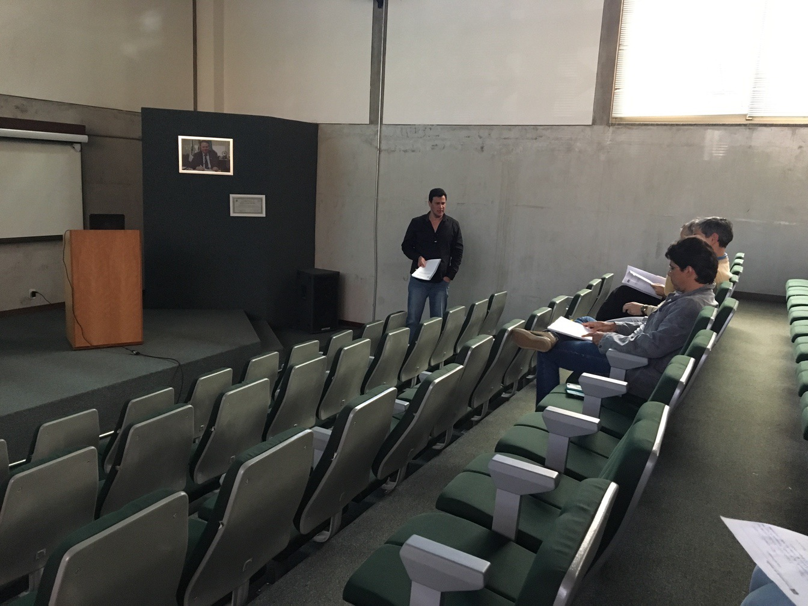

New Paper at The Journal of Physical Chemistry C
Strong Solvent Effects on the Nonlinear Optical Properties of Z and E Isomers from Azo-Enaminone Derivatives
Daniel F. S. Machado, Thiago O. Lopes, Igo T. Lima, Demétrio A. da Silva Filho, and Heibbe C. B. de Oliveire
We calculated the nonlinear optical properties of 24 azo-enaminone derivatives, incorporating solvent effects on their geometric and electronic structure, to assess the impact of the environment on these properties. Namely, we incorporated chloroform, tetrahydrofuran, acetone, ethanol, methanol, and dimethyl sulfoxide in our calculations and compared our results incorporating solvent effects with our gas-phase calculations. To account for the electron correlation effects on NLO properties, we performed the calculations at MP2/6-31G(p)//MP2/6-31G(d) level set. The polarizable continuum model was used to simulate the presence of the solvent. The exponents of p extra functions added to heavy atoms were obtained, imposing the maximization of the first hyperpolarizability. Two structural configurations (Z and E) of azo-enaminones were investigated to assess the isomeric effects of the electric properties. Our results show that both solvent polarity and relative strength of the donor groups have a significant impact on the electric properties but more strikingly on the first hyperpolarizability β.
New Paper at Journal of Molecular Modeling
A novel analytical potential function for dicationic diatomic molecular systems based on deformed exponential function
Daniel F. S. Machado, Rodrigo A. L. Silva, Ana Paula de Oliveira, Valter H. Carvalho-Silvam Ricardo Garganom Luciano Ribeiro, Heibbe C. B. de Oliveira
In this paper, we propose a new alternative analytical function aiming to better describe the potential energy curves of the doubly charged diatomic molecules. To achieve this goal, we modified an existing potential function in the literature to describe dicationic diatomic molecules using the deformed exponential function. We generated the potential energy curve of the testing group of dicationic diatomic molecules Be2+2Be22+ , BH2+, He2+2He22+ and NH2+ by means of the CCSD(T)/aug-cc-pVQZ level of theory. To validate this new function, we also calculated the spectroscopic constants and the rovibrational spectra for the electronic state X1Σ+gX1Σg+ of the Be2+2Be22+ and He2+2He22+ systems using the Dunham and discrete variable representation methods. For BH2+ and NH2+ molecules, despite exhibiting a local minimum in the potential energy curve, no vibrational levels are supported, so the spectroscopic constants for these poorly bound systems are invalidated. The fitting accuracy had a better performance over the original potential for describing dicationic diatomic systems, considering that the discrete variable representation method resulted in a similar vibrational structure described in the literature. This fact can be explained due to the deformed function’s flexibility.
New Paper at Journal of Molecular Modeling
Effect of the crystalline environment on the third-order nonlinear optical properties of L-arginine phosphate monohydrate: a theoretical study
Clodoaldo Valverde, Rosemberg F. N. Rodrigues, Daniel F. S. MachadoBasílio Baseia, Heibbe C. B. de Oliveira
A supermolecular approach combined with an iterative electrostatic scheme was employed to investigate the nonlinear optical properties of the hybrid L-arginine phosphate monohydrate crystal, the procedure being aided by DFT calculations. The supermolecular scheme basically treated the molecules surrounding the unit cell as point charges; this approximation results in rapid convergence, making it a feasible method. DFT functionals of different flavors were considered: B3LYP, B2PLYP, CAM-B3LYP, ωB97, and M06HF, utilizing the 6-311 + G(d) basis set. All functionals gave sufficiently accurate values for the dipole moment (μ) with respect to the experimental value 32(2) D. For the average linear polarizability ( α⎯⎯⎯α¯ ) and the total first hyperpolarizability (βtot), good agreement was observed between the DFT-calculated values and MP2-derived results reported in the literature. For the second hyperpolarizability, both static and dynamic regimes were considered. The point-charge embedding approach led to an attenuation of the second hyperpolarizability γ for all frequencies considered. Excitations of γ were not observed for frequencies smaller than 0.1 a.u. For the second hyperpolarizability (both static and dynamic), computational results showed that L-arginine phosphate monohydrate exhibits a large nonlinear optical effect, which implies the occurrence of microscopic third-order NLO behavior.
New Paper at New Journal of Chemistry
Synthesis, structural characterization and computational study of a novel amino chalcone: a potential nonlinear optical material
Leonardo R. Almeida, Murilo M. Anjos, Gabriela C. Ribeiro, Clodoaldo Valverde, Daniel F. S. Machado, Guilherme R. Oliveira, Hamilton B. Napolitano and Heibbe C. B. de Oliveira
The interest for novel chalcone-based materials in nonlinear optics is dependent on strong second harmonic generation in organic systems. Chalcones are α,β-unsaturated ketones that can be easily obtained by Claisen–Schmidt condensation between ketones and aromatic aldehydes. A new 2-amino-chalcone was synthesized and its crystal molecular structure was elucidated using the single crystal X-ray diffraction technique. This compound, C15H12BrNO2, crystallizes in monoclinic centrosymmetric space group C2/c with cell parameters a= 29.47(7) Å; b = 6.97(5) Å, c = 13.59(1) Å, β = 112.52(6)° and V = 2581.2(2) Å3. In addition to the crystal structure, the analysis of Hirshfeld surfaces indicates the presence of hydrogen bonds of types N–H⋯O and O–H⋯O that stabilize two independent centrosymmetric dimers, and also indicates the presence of π–π stacking interactions that stabilize a supramolecular trimeric system. Being a push–pull chromophore we investigated the NLO properties of the 2-amino-chalcone asymmetric unit using the supermolecule approach in combination with an iterative electrostatic polarization scheme. The calculations were performed using the CAM-B3LYP/6-311+G(d) level of theory for both dynamic and static situations. In the presence of the embedding charges, the γ value is increased by 20% for the dynamic calculation but only 8% for the static limit. In contrast to the crystal form, when in solution the 2-amino-chalcone lacks an inversion center so that second order NLO properties do not vanish. Following this idea we computed the NLO properties using the implicit solvation approach IEF-PCM. The solvent effect on the NLO properties was to augment its values as the solvent polarity increases. We obtained for the in-crystal and in DMSO 2-amino-chalcone, γ(−2ω;ω,ω,0) = 144.12 × 10−36 esu and 260.163 × 10−36 esu, respectively, and therefore interesting materials for third order NLO applications.
Back Cover of Physical Chemistry Chemical Physics
Rovibrational spectroscopic constants of the interaction between ammonia and metallo-phthalocyanines: a theoretical protocol for ammonia sensor design
Alan R. Baggio, Daniel F. S. Machado, Valter H. Carvalho-Silva, Leonardo G. Paterno and Heibbe Cristhian B. de Oliveira
In the present contribution, we develop an adapted theoretical approach based on DFT calculations (B3LYP functional) and solution of the nuclear Schrödinger equation by using the Discrete Variable Representation method to model the interaction of ammonia with metallo-phthalocyanines (MPcs, where M = Fe2+, Co2+, Ni2+, Cu2+ or Zn2+). This approach is intended to be a general protocol for the rational design of chemical sensors. The as-obtained binding energy curves, obtained from ab initio points, permitted us to calculate rovibrational energies and spectroscopic constants, as well as to establish the relative population of rovibrational states in different types of MPc–NH3 thermodynamic systems. Simulated binding energy curves show that the binding energy in MPc–NH3 systems is dependent on the type of M central ion, decreasing in the order FePc > ZnPc > CoPc > CuPc > NiPc, with values spanning from −170 to −16 kJ mol−1. Also, MPc–NH3 systems have at least 16 rovibrational levels, which confirms that they are all bound systems (chemically or physically). Despite that, only the interaction between ammonia and FePc, CoPc or ZnPc is spontaneous within the studied temperature range (200–700 K). NiPc and CuPc show a change between spontaneous and non-spontaneous behaviours at ∼400 K and ∼500 K, respectively. Less bound systems should more efficiently guarantee the sensors' signal reset, while they are also less specific than sensors built with medium to strongly bound systems. Moreover, the intermediate energy and spontaneous binding of ammonia to NiPc and CuPc at operation temperatures, as determined with our theoretical approach, suggests that these MPcs are most promising for ammonia sensors.
Thesis Defense of Daniel FS Machado
Advisor: Prof. Dr. Heibbe CB de Oliveira
Coadivisor: Prof. Dr. Demétrio AS Filho
Photos


